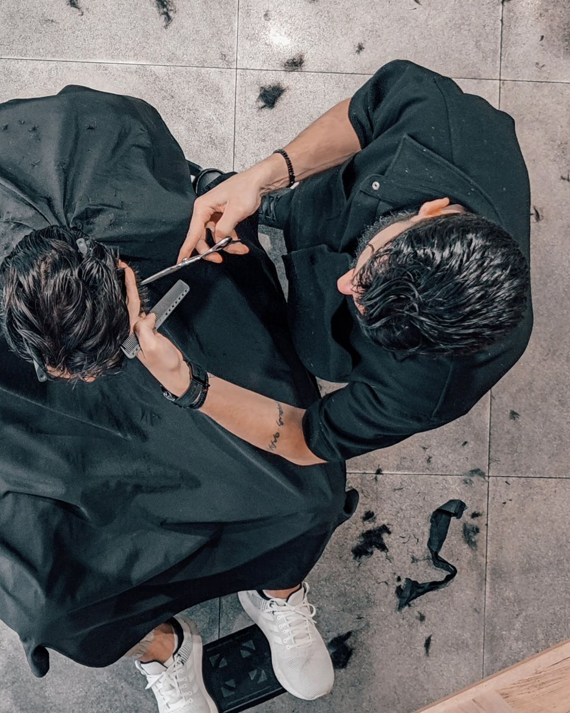
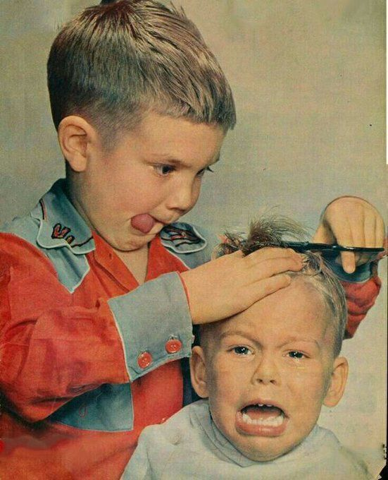

Miért nem elég annyi, hogy "csinálj valamit"?
Sok férfi elégedetlenül áll fel a borbély székéből – nem azért, mert a borbély rosszul dolgozott, hanem mert nem értették egymást. A hajvágás kommunikáció is, és ha az egyik fél nem mondja el pontosan, mit szeretne, a végeredmény könnyen félresikerül.
A barber nem olvas gondolatot. Látja az arcformádat, a hajadat és a mostani frizurádat – de nem tudja, hogy te mit tartasz hosszúnak, rövidnek, vagy élesnek. Ezeket el kell mondani. Minél pontosabb a kommunikáció, annál valószínűbb, hogy az eredmény tetszeni fog.

Hogyan kommunikálj a barbereddel?
Néhány egyszerű módszer, amellyel sokkal pontosabban tudod közvetíteni, mit szeretnél – akkor is, ha nem vagy jártas a szakmai kifejezésekben.
Mutass referenciaképet
A legegyszerűbb és leghatékonyabb módszer. Egy kép ezer szót megspórol – és elkerüli a félreértelmezéseket. Nem kell tökéletes képet találni, elég valami hasonló, amiről el tudod mondani, mi tetszik benne.
Mondd el az életstílusodat
Mennyit akarsz foglalkozni a hajaddal? Sportos vagy irodai az életmódod? Reggel van időd formázni, vagy nem? Ezek mind befolyásolják, hogy melyik stílus működik a hétköznapjaidban.
Mondd el a hosszakat
Ha van elképzelésed a konkrét hosszakról, mondd el: "oldalt 1-es gép", "felül maradjon hosszabb", "ne legyen túl átmenetes". A számok és a viszonyítási pontok pontosabbak, mint az olyan szavak, hogy "rövid" vagy "közepes".
Mondd el, mit NEM akarsz
Sokszor könnyebb meghatározni, mi nem tetszik, mint azt, mi igen. "Ne legyen túl rövid felül", "ne legyen nagyon éles az átmenet", "ne tűnjön el a haj a tetőn" – ezek mind hasznos iránymutatók.

Néhány alapfogalom, amit érdemes ismerni
Nem kell profi szinten ismerni a barber szakmát ahhoz, hogy jól kommunikálj – de néhány alapfogalom segíthet pontosabban kifejezni, amit szeretnél.
- Fade – fokozatos átmenet a rövid oldaltól a hosszabb tetőrészig. Lehet skin fade (bőrig vágott), mid fade (fül magasságában kezdődő) vagy high fade (magasan kezdődő)
- Taper – lassabb, lágyabb átmenet, kevésbé éles, mint a fade
- Texturált – tépett, természetes hatású vágás, ahol a hajvégek nem egyenletesek
- Kontúrvonal – az a vonal, ahol a haj véget ér a homlok és a tarkó mentén – lehet éles vagy lekerekített
- Disconnect – éles, látható határvonal az oldal és a tetőrész között, átmenet nélkül
- Crop – rövid, egyenes tetőrész, jellemzően fringe-gel (előre fésült hajjal) kombinálva
Mire számíts egy jó konzultáción?
Egy tapasztalt barber a konzultáció során nemcsak meghallgat, hanem aktívan segít. Megnézi az arcformádat, a haj növekedési irányát, a sűrűséget – és ezek alapján javaslatot tesz, esetleg finomít azon, amit kérsz.
Ha például egy olyan fade-et kérsz, ami az arcformádhoz nem a legelőnyösebb, egy jó barber ezt elmondja és alternatívát javasol. Ez nem azt jelenti, hogy nem hallgat rád – hanem azt, hogy a munkáját komolyan veszi.
- Hallgatja az elképzelésedet és megérti, mit szeretnél
- Megnézi az arcformát és a hajtípust, mielőtt bármit vágna
- Javaslatot tesz, ha valami nem lenne előnyös
- Elmondja, hogyan tartsd karban otthon a frizurát
A Bosphorus barber shopban minden hajvágás ezzel a konzultációval kezdődik – röviden, de érdemben. Az eredmény ennek köszönhetően következetesen jó, nem véletlenszerű.
Mondd el, mit szeretnél – mi megcsináljuk
Hozz referenciaképet, mondd el az életstílusodat, vagy csak ülj le és hagyd, hogy a borbély javasoljon. A Bosphorus barber shopban a konzultáció része a szolgáltatásnak – nem extra.